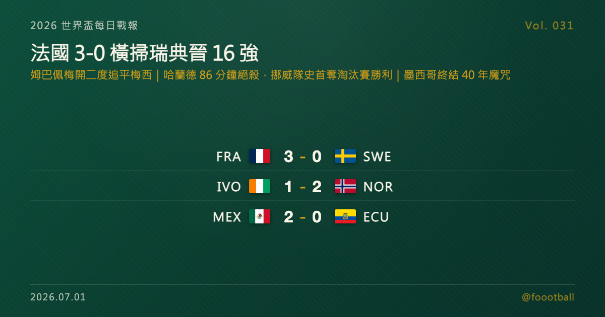

法國 3-0 橫掃瑞典晉 16 強：姆巴佩梅開二度追平梅西；哈蘭德 86 分鐘絕殺，挪威隊史首奪淘汰賽勝利；墨西哥終結 40 年魔咒
2026 世界盃 32 強淘汰賽 6/30 三場賽事全部踢完：法國 3-0 橫掃瑞典晉級，姆巴佩梅開二度追平梅西本屆進球數；挪威哈蘭德 86 分鐘絕殺 2-1 逆轉象牙海岸，隊史首奪世界盃淘汰賽勝利、將對陣巴西；地主墨西哥 2-0 擊退厄瓜多，終結近 40 年世界盃淘汰賽魔咒。

2026 世界盃每日戰報 Vol. 031｜32 強淘汰賽｜6/30 美加墨當地賽果（三場）
§1 即時比分戰報
2026 世界盃 32 強淘汰賽 6/30（美東時間）踢完三場，戰線橫跨紐澤西、達拉斯到墨西哥城。最受矚目的一戰在東盧瑟福：法國 3-0 橫掃瑞典晉級 16 強，姆巴佩上下半場各入一球梅開二度，巴爾科拉補上一球；達拉斯戰場同樣戲劇性十足，挪威第 86 分鐘由哈蘭德絕殺，2-1 逆轉此前一度扳平比數的象牙海岸，拿下隊史首場世界盃淘汰賽勝利；墨西哥城主場，地主墨西哥則靠上半場兩粒進球 2-0 擊退厄瓜多，終結一段近 40 年的世界盃淘汰賽不勝紀錄。以下是本輪三場賽果：
| 賽事 | 比分 | 場館 | 焦點 |
|---|---|---|---|
| 🇫🇷 法國 — 🇸🇪 瑞典 | 3 - 0 | 東盧瑟福 MetLife Stadium | 姆巴佩梅開二度（45'、74'）、巴爾科拉 53' |
| 🇨🇮 象牙海岸 — 🇳🇴 挪威 | 1 - 2 | 阿靈頓 AT&T Stadium | Antonio Nusa 39'（NOR）、迪亞洛 74'（CIV）追平、哈蘭德 86' 絕殺（NOR） |
| 🇲🇽 墨西哥 — 🇪🇨 厄瓜多 | 2 - 0 | 墨西哥城 Estadio Azteca | 基尼奧內斯 22'、希門尼斯 31' |
三場之中，法國姆巴佩的梅開二度話題性最高——§4 有一篇特刊會把這場比賽與姆巴佩的金靴追逐拆得更細；挪威與墨西哥則各自寫下隊史意義：一個拿下隊史淘汰賽首勝，一個終結多年淘汰賽魔咒。
§2 排行榜區：32 強淘汰賽晉級動態
32 強淘汰賽（Round of 32）持續進行，本輪三場結束後，法國、挪威、墨西哥晉級 16 強：
| 賽事 | 結果 | 晉級 |
|---|---|---|
| 🇫🇷 法國 — 🇸🇪 瑞典 | 3 - 0 | 🇫🇷 法國 |
| 🇨🇮 象牙海岸 — 🇳🇴 挪威 | 1 - 2 | 🇳🇴 挪威 |
| 🇲🇽 墨西哥 — 🇪🇨 厄瓜多 | 2 - 0 | 🇲🇽 墨西哥 |
挪威靠哈蘭德的絕殺拿下隊史首場世界盃淘汰賽勝利，追平 1998 年的最佳世界盃成績，下一戰將對陣巴西；墨西哥則以地主之姿終結近 40 年的世界盃淘汰賽不勝紀錄，下一戰將對上英格蘭與民主剛果之間的勝者。完整 32 強對戰進度、16 強對戰圖與金靴榜，可見本站「戰況中心」：https://foootball.twtools.cc/standings/
§3 賽事摘要
法國 3-0 瑞典——姆巴佩主宰全場的一戰。上半場第 45 分鐘，姆巴佩率先破門，法國帶著 1-0 進入中場；下半場第 53 分鐘，巴爾科拉錦上添花，把比分拉開到 2-0；第 74 分鐘，姆巴佩再下一城，完成梅開二度，也把比分定格在 3-0。這場勝利讓法國晉級 16 強，將對陣巴拉圭；姆巴佩此役梅開二度，也讓他本屆世界盃進球數追平梅西，金靴爭奪戰的話題性再添一筆。
象牙海岸 1-2 挪威——本輪最跌宕的一場。第 39 分鐘，挪威由 Antonio Nusa 率先破門；象牙海岸沒有輕易放棄，第 74 分鐘由迪亞洛扳平，把比賽拖入緊張的收尾階段。眼看比賽可能就此打平，哈蘭德在第 86 分鐘的絕殺一擊，替挪威鎖定 2-1 勝利。這粒進球的意義遠不只是三分——這是挪威隊史第一場世界盃淘汰賽勝利，下一戰將對陣巴西。
墨西哥 2-0 厄瓜多——地主球迷主場歡呼的一夜。上半場墨西哥火力集中在前 30 分鐘：第 22 分鐘基尼奧內斯破門，第 31 分鐘希門尼斯再入一球，墨西哥憑藉這兩粒進球守住 2-0，晉級 16 強。這場勝利也讓地主墨西哥終結了一段近 40 年的世界盃淘汰賽不勝紀錄。
§4 焦點觀察｜特刊預告：姆巴佩的梅開二度，追平梅西的那一夜
今天觸發了一篇特刊。法國 3-0 瑞典這個比分本身不算最懸殊，但真正讓這場比賽被單獨拉出來說的，是姆巴佩上下半場各入一球的梅開二度——第 45 分鐘率先破門、第 74 分鐘再下一城，兩粒進球之間夾著巴爾科拉第 53 分鐘的錦上添花，法國幾乎是一路壓著瑞典打完全場，比分從頭到尾沒有懸念。
這兩粒進球的份量不只在比分板上。姆巴佩此役梅開二度，進一步推高他個人在世界盃淘汰賽階段的累積進球數，也讓他本屆世界盃進球數追平梅西——兩位跨世代的射手，就這樣在同一屆世界盃的射手榜上並駕齊驅。一個是即將告別世界盃舞台的傳奇，一個是正當顛峰的現役第一射手，這種交會在世界盃史上並不常見。特刊會把這場比賽的戰術細節、姆巴佩本屆至今的進球軌跡，以及這場追平對金靴爭奪戰後續走向的意義，講得更透。
📖 完整特刊稍後發佈，敬請留意帳號更新。
常見問題
今天世界盃踢了幾場？結果如何？
6/30 共踢完三場 32 強淘汰賽：法國 3-0 橫掃瑞典、挪威 2-1 逆轉象牙海岸、地主墨西哥 2-0 擊退厄瓜多，三隊皆晉級 16 強。
姆巴佩這場梅開二度是什麼情況？
姆巴佩在第 45 分鐘與第 74 分鐘各入一球，助法國 3-0 橫掃瑞典晉級。這兩粒進球也讓他追平了梅西在本屆世界盃的進球數，成為今天觸發特刊的焦點。
挪威、墨西哥晉級 16 強後，下一戰對手是誰？
挪威靠哈蘭德 86 分鐘絕殺淘汰象牙海岸，拿下隊史第一場世界盃淘汰賽勝利，下一戰將對陣巴西。墨西哥終結近 40 年世界盃淘汰賽不勝紀錄晉級，下一戰將對上英格蘭與民主剛果之間的勝者。
Tags: 世界盃, 2026世界盃, 法國, 姆巴佩, 挪威, 哈蘭德, 墨西哥, 淘汰賽